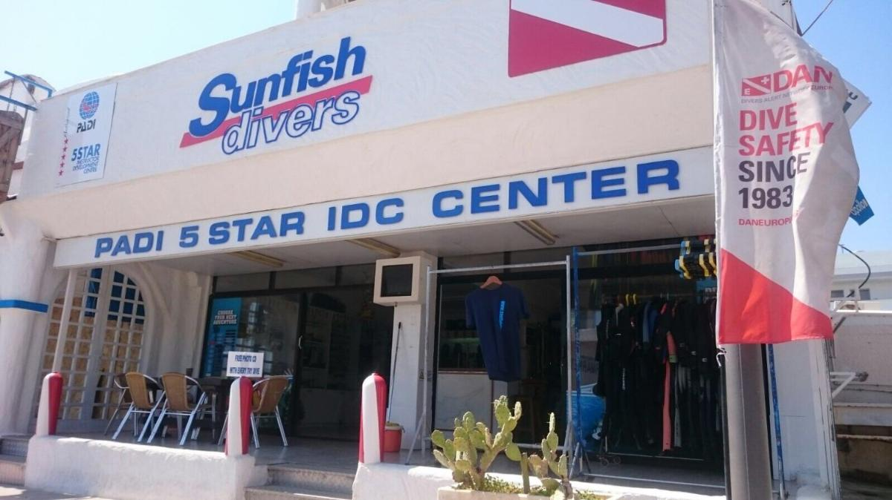
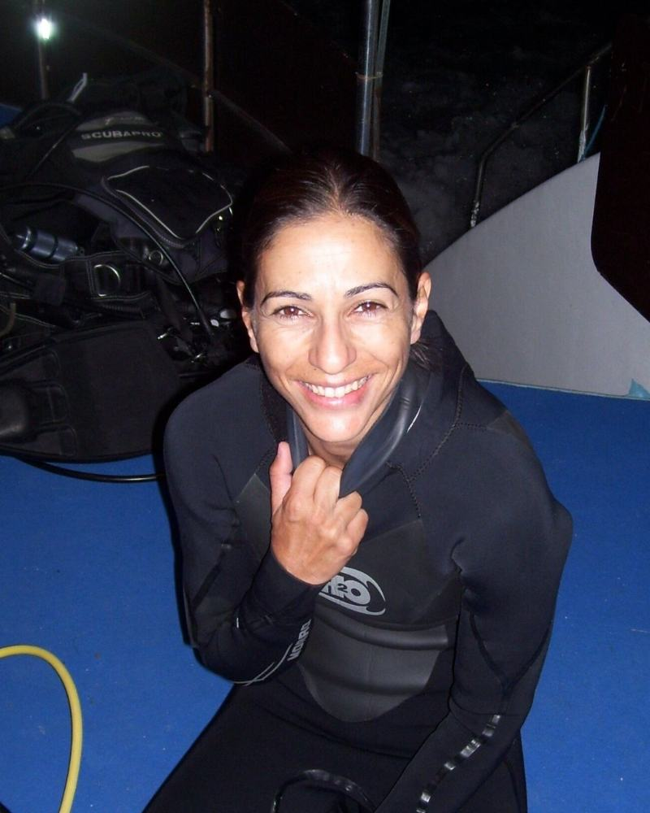

0 m About
Teaching scuba divers for over 40 years.
Sunfish Divers opened in Ayia Napa in 1982, and we have been in the same place ever since.
That makes us one of the town's oldest dive centres. Four decades on, the best part of the job has not changed: being there when someone takes a first breath underwater.

Our story
Four decades in Ayia Napa
-
1982
Where it began
Founded in Ayia Napa
Sunfish Divers opens its doors and takes its first guests diving near Cavo Greko. We are still at the same location today.
-
1990
A first milestone
PADI 5 Star Dive Centre
Eight years after opening, Sunfish Divers becomes a PADI 5 Star Dive Centre.
-
2008
Teaching the teachers
PADI 5 Star Instructor Development Centre
Sunfish Divers becomes a PADI 5 Star Instructor Development Centre. Today every PADI level is taught here, from a first certification to instructor.
-
Today
Still here
Same place, same welcome
- A full-time PADI Course Director
- Multilingual instructors
- Open daily from 1 April to 31 October
Diving with us
What we offer
-
Discover Scuba Diving
A quick introduction to diving, always with a qualified instructor. It takes about three hours and goes to a maximum of 10 m. It is not a certification, but it is the first step towards one.
Try diving -
PADI courses
Every PADI level in one place, from Scuba Diver and Open Water Diver to Divemaster, with specialties to suit the diving you love and instructor courses for those who want to teach.
-
Shore and wreck dives
Nine local sites around Cavo Greko, all dived from the shore, for beginners and experienced divers alike. Advanced divers can go on to the local wrecks Liberty and Nemesis III, and to the Zenobia off Larnaca.
See dive trips -
Dive centre services
A shop with snorkelling, scuba and swimming equipment from Scubapro, Mares and Seac, daily equipment hire, air fills up to 300 bar, cylinder inspections and annual equipment servicing.
Visit the dive centre
Meet Dena
Our Course Director, Dena Asimenou

PADI Course Director
Dena started diving in 1996 and joined Sunfish Divers as an instructor in 1998.
- 1996Started diving
- 1998Joined Sunfish Divers as an instructor
About ten years later, she became a Course Director. Today she is our full-time PADI Course Director.
Thinking about teaching diving yourself? Our instructor courses are where that begins.
Planning a few days of diving?
Dive Packages
We put dive packages together on request. Full details will follow on this page.
Until then, tell us how long you are staying and what you would like to do, and we will come back to you with a suggestion.